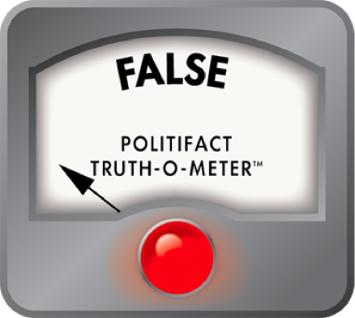

False
“A 20/30 vision score means “people have to be at 20 feet to see” things that “I can see at 30 feet.””
No, that’s not true: We fact checked ‘Love Island USA’ Kenzie’s statement that 20/30 vision is better than 20/13. Here’s what vision scores mean.
Proposed Community Note 194/280
This describes 20/30 vision backwards. A 20/30 score means worse-than-average eyesight: you must be 20 feet from an object to see clearly what an average person sees from 30 feet away. Source: https://www.politifact.com/factchecks/2026/jun/17/kenzie-annis/love-island-usa-fact-check-is-2030-vision-better-t/